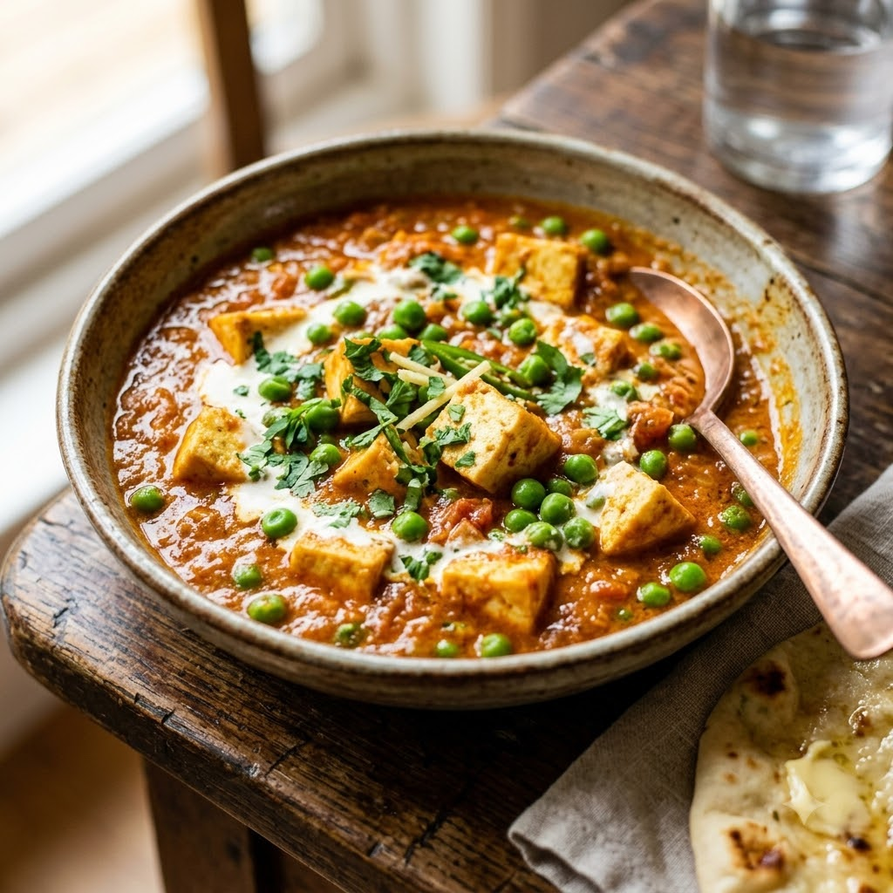

Matar Paneer

Matar Paneer
Chef Magic – Sauté Auto 21 min — Serves 4
Gluten-Free • Vegetarian • High-Protein • Everyday
🧑🍳 Chef Magic🍽 Serves 4
Ingredients
- 200g paneer, cubed
- 1 cup green peas
- 1 onion, chopped
- 2 tomatoes, pureed
- 1 tbsp ginger-garlic paste (adrak-lehsun paste)
- 1 tsp garam masala
- 1/2 tsp turmeric (haldi)
- 2 tbsp oil
- Salt to taste
- Coriander (dhania) to garnish
Method
1Add oil to the jar; select Sauté (Speed 2–4, ~130–160°C) and cook onion for 4 minutes until golden.
2Add ginger-garlic paste, tomatoes, turmeric and garam masala; sauté for 7 minutes until the oil separates.
3Add peas and a splash of water; simmer on Sauté (Speed 1–2, ~100–110°C) for 6 minutes until peas are tender.
4Gently fold in the paneer cubes and salt; sauté for 2 minutes just to warm through. Garnish with coriander.